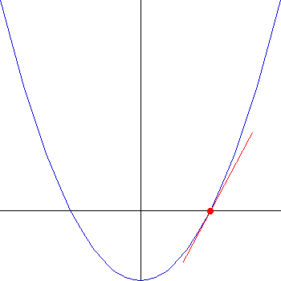

Basin of Attraction Example
To illustrate finding the basins of attraction, we consider the real version of the
first problem Cayley solved for the
complex Newton's method.
The function f(x) = x2 - 1 has two roots, x = 1 and
x = -1. We find the basin of attraction of Newton's method for each root.
|
|
|  |
| The point x0 = 1 is a root, so the
tangent line to the graph of f(x) = x2 - 1 at x = 1
crosses the x-axis at x = 1. That is, Newton's method starting at
x = 1 converges to x = 1 immediately.
|
|
Consequently,
the basin of attraction of x = 1 is all x0 > 0,
and the basin of attraction of x = -1 is all x0 < 0.
Return to Complex Newton's Method.